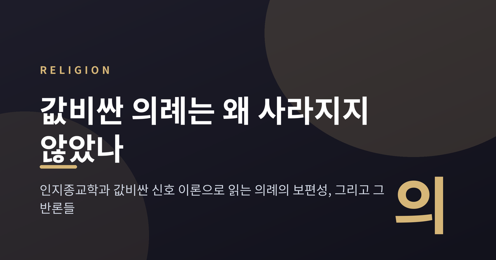
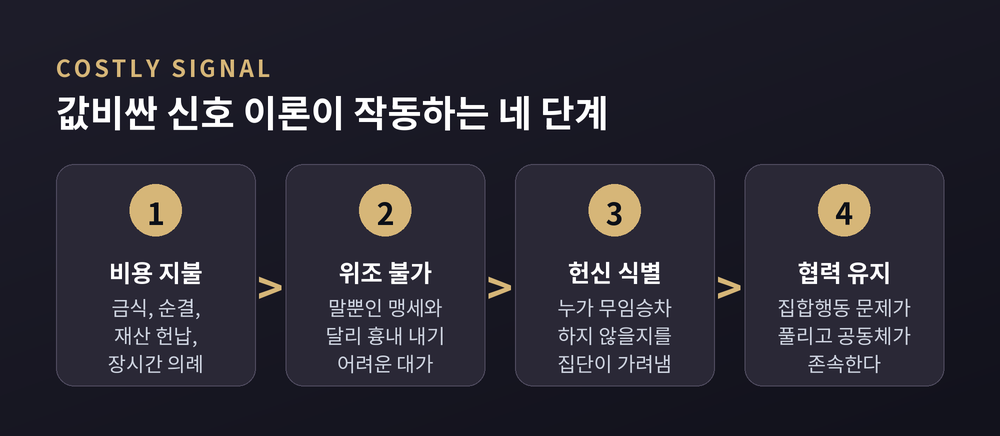
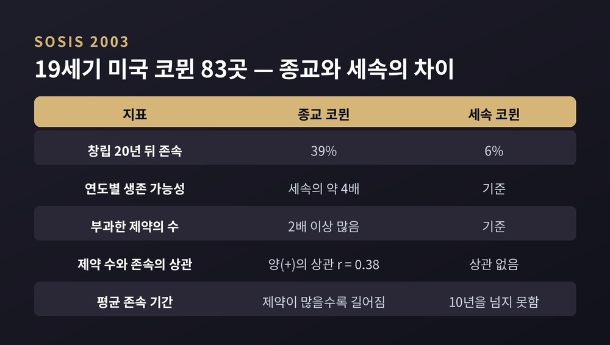
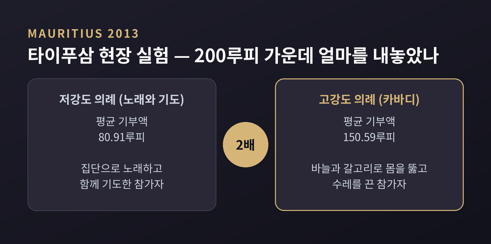
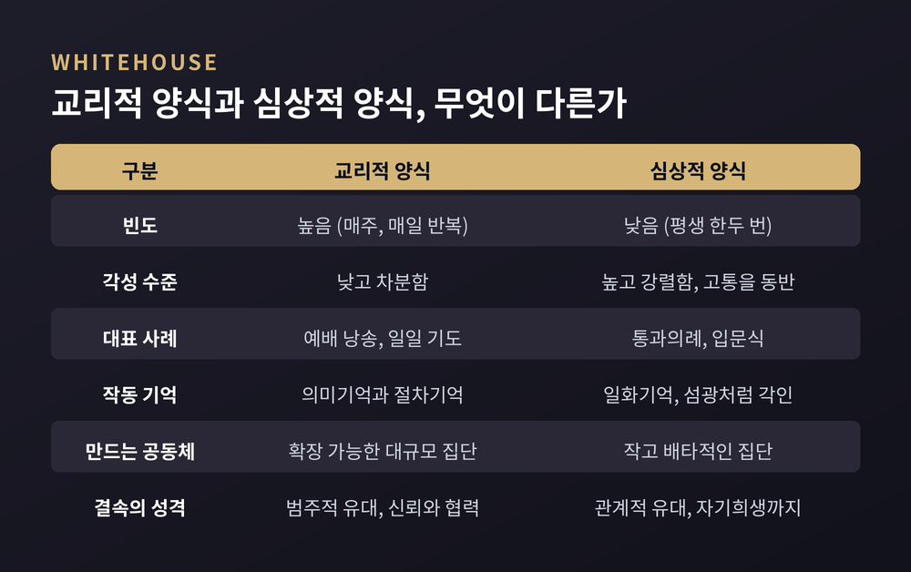
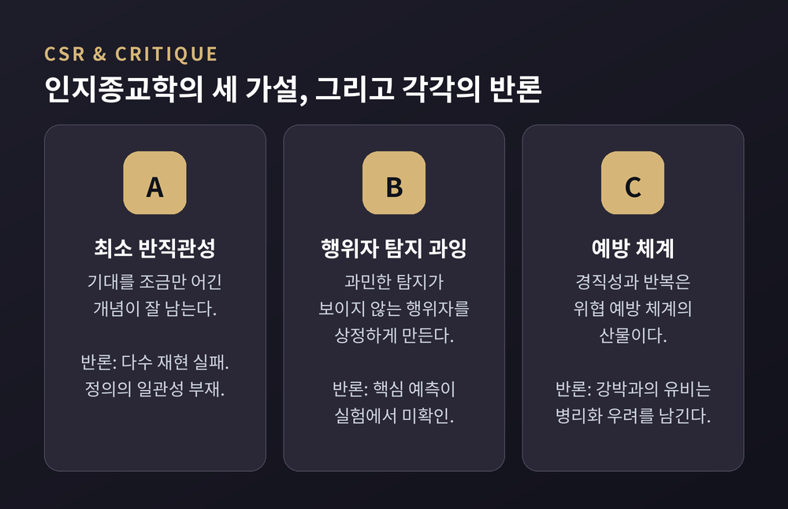

비용은 명백한데 편익은 불투명한 행동이 어떻게 인류 보편으로 남았는가 — 값비싼 신호 이론과 인지종교학의 답, 그리고 환원주의 비판까지
이번 글에서는 의례를 인지종교학과 값비싼 신호 이론의 눈으로 정리해 보겠습니다. 시간과 몸을 소모하는데 눈에 보이는 산출물이 없는 행동이, 어떻게 인류 어디에서나 살아남았는가. 이 질문 하나를 붙들고 따라가 보겠습니다.
세 줄 요약

의례는 비용의 관점에서 보면 이상한 행동입니다.
기도를 반복한다고 곡식이 늘지 않습니다. 금식을 한다고 사냥이 쉬워지지 않습니다. 어떤 의례는 재산 포기와 신체적 고통까지 요구합니다.
그런데 인류학이 보고한 사회 가운데 의례가 없는 사회는 없습니다.
여기서 문제가 생깁니다. 비용은 명백한데 편익은 불투명한 행동이, 어떻게 문화와 시대를 가로질러 유지되는가 하는 문제입니다.
20세기 후반 이후 이 질문에 답하려는 연구 프로그램이 크게 두 갈래로 갈라졌습니다.
하나는 인지종교학입니다. 종교적 관념과 의례의 형식을 일반적인 인지 구조의 부산물로 봅니다. 댄 스퍼버와 파스칼 보이어가 대표적입니다.
다른 하나는 진화종교학 계열의 값비싼 신호 이론입니다. 비용이 부산물이 아니라 기능이라고 봅니다. 리처드 소시스와 로렌스 이아네콘의 작업이 여기 들어갑니다.
두 갈래 모두 종교학계로부터 같은 비판을 받고 있습니다. 환원주의라는 비판입니다. 이 글은 그 비판까지 함께 다루겠습니다.
값비싼 신호 이론의 원형은 생물학에 있습니다. 이스라엘의 조류학자 아모츠 자하비가 제안한 핸디캡 원리입니다.
공작의 꼬리는 생존에 불리합니다. 무겁고 눈에 잘 띕니다. 그런데 바로 그 불리함 때문에 정직한 신호가 됩니다. 건강하지 않은 개체는 그 비용을 감당할 수 없기 때문입니다.
이 논리를 집단에 적용해 보겠습니다.
집단에 헌신할 생각이 없는 사람에게 금식과 순결, 재산 헌납, 장시간의 의례는 감당하기 어려운 부담입니다. 말로 하는 맹세는 값이 싸고 위조가 쉽습니다. 몸으로 치르는 대가는 그렇지 않습니다.
소시스와 브레슬러가 논문에서 정리한 이론의 핵심 명제는 이렇습니다. 종교 의례와 금기는 집단 내 협력을 촉진하며, 그것이 종교의 일차적 적응 편익이라는 것입니다.
경제학 쪽에서도 비슷한 논의가 따로 진행되었습니다.
로렌스 이아네콘은 1992년 『정치경제학 저널』에 「희생과 낙인」을 실었습니다. 종교 집단은 무임승차자를 직접 식별해 내쫓기가 어렵습니다. 그래서 간접적인 방법을 씁니다. 독특한 복장이나 특정 소비의 금지처럼 겉으로 드러나면서 비용이 드는 행동을 요구하는 것입니다.
이아네콘은 이런 집단을 "엄격한 교회"라고 불렀습니다. 그리고 상대적으로 덜 제도화된 보수적 종파가 가장 빠르게 성장한다는 경험적 사실을 함께 제시했습니다.
한 가지는 분명히 해 두겠습니다. 이것은 엄격한 종교가 옳다거나 좋다는 주장이 아닙니다. 조직의 생존이라는 좁은 지표에 대한 경제학 모형일 뿐입니다. 규범적 평가와는 층위가 다릅니다.

이론은 그럴듯합니다. 문제는 검증입니다.
리처드 소시스와 에릭 브레슬러가 2003년 『비교문화연구』에 발표한 연구가 자주 인용되는 이유가 여기 있습니다.
두 사람은 19세기 미국의 공동체, 곧 코뮌 83곳의 역사 자료를 모았습니다. 그리고 각 코뮌이 구성원에게 부과한 제약의 개수를 세었습니다. 음식 금기와 금식, 물질적 소유의 제한, 결혼과 성에 대한 규제, 외부 세계와의 소통 제한 같은 것들입니다.
코뮌을 고른 이유는 분명합니다. 모든 코뮌은 협동 노동이라는 집합행동 문제를 반드시 풀어야만 존속할 수 있기 때문입니다.
결과는 이렇습니다.
창립 20년 뒤에도 기능하고 있던 종교 코뮌은 39%였습니다. 세속 코뮌은 6%였습니다. 생애주기의 각 연도를 기준으로 보면 종교 코뮌은 세속 코뮌보다 약 네 배 더 오래 살아남았습니다.
부과한 제약의 수도 종교 코뮌이 두 배 이상 많았습니다.
그리고 결정적인 대목이 나옵니다. 제약이 많을수록 오래 존속하는 관계가 종교 코뮌에서만 나타났습니다. 상관계수는 0.38이었고, 인구 규모와 수입, 창립 연도를 통제한 뒤에도 유지되었습니다.
세속 코뮌은 달랐습니다. 요구를 아무리 늘려도 평균 존속 기간이 10년을 넘지 못했습니다.
소시스의 해석은 이렇습니다. 초자연적 권위에 근거한 요구는 합리적 재협상에 덜 노출됩니다. 세속 코뮌에서는 "이 규칙을 왜 지켜야 하나"라는 질문이 언제든 정당하게 제기될 수 있습니다. 종교 코뮌에서는 그 질문 자체가 차단됩니다.
물론 한계도 함께 봐야 합니다. 무엇을 "값비싼 요구"로 셀지는 연구자가 정합니다. 기록이 남은 코뮌만 표본에 들어갔을 가능성도 있습니다. 상관계수 0.38은 중간 크기이고, 존속의 상당 부분은 여전히 설명되지 않은 채 남습니다.
소시스 본인도 후속 논문에서 같은 문제를 스스로 제기했습니다. 값비싼 요구가 그렇게 효과적이라면, 왜 우리 모두가 가장 엄격한 집단에 들어가 있지 않은가 하는 물음입니다.

역사 자료만으로는 부족합니다. 현장 실험이 필요했습니다.
디미트리스 지갈라타스를 포함한 아홉 명의 연구진이 2013년 『심리과학』에 「극단적 의례는 친사회성을 촉진한다」를 실었습니다.
무대는 모리셔스의 힌두 축제 타이푸삼이었습니다. 연구진은 두 종류의 의례를 비교했습니다.
하나는 저강도 의례입니다. 집단으로 노래하고 기도합니다.
다른 하나는 카바디입니다. 수십 개의 바늘과 갈고리, 꼬챙이로 몸을 뚫습니다. 열대의 땡볕 아래 무거운 구조물을 지고 몇 시간을 걷습니다. 피부를 관통한 쇠사슬로 큰 수레를 끌기도 합니다.
참가자는 남성 86명이었습니다.
연구진은 시간에 대한 보상으로 200루피를 지급했습니다. 그런 다음 보조 연구원이 지역 자선단체를 안내하고, 익명으로 기부할 의향이 있는지 물었습니다.
고강도 의례 참가자의 평균 기부액은 150.59루피였습니다. 저강도 참가자는 80.91루피였습니다. 유의수준은 0.001보다 작았습니다.
흥미로운 결과가 두 가지 더 있습니다.
첫째, 참가자가 느낀 통증이 클수록 기부액이 커졌습니다. 둘째, 직접 몸을 뚫지 않고 지켜보기만 한 사람들도 저강도 참가자보다 더 많이 기부했습니다.
해석에는 신중해야 합니다.
기부가 늘어난 것이 집단 결속 때문인지, 축제 직후의 각성 상태가 만든 일시적 효과인지 구분하기 어렵습니다. 연구자 앞에서 나타나는 사회적 바람직성 편향도 배제할 수 없습니다. 남성 86명이라는 표본은 일반화에 한계가 있습니다. 무엇보다 "자선 기부"가 진화적 의미의 집단 내 협력과 같은 것인지도 논쟁 중입니다.
심리학 전반이 재현성 위기를 겪는 중이라는 점도 함께 기억할 필요가 있습니다. 단일 현장 연구의 무게는 조심스럽게 다뤄야 합니다.

옥스퍼드대의 하비 위트하우스는 다른 각도에서 접근했습니다. 파푸아뉴기니 현지조사에서 출발한 의례 양식 이론입니다.
그는 의례가 두 방향으로 뭉친다고 봤습니다.
교리적 양식은 자주, 차분하게 반복됩니다. 매주의 예배와 일일 기도가 여기 속합니다. 반복되기 때문에 의미기억과 절차기억에 얹히고, 스키마와 스크립트로 자리 잡습니다. 이런 의례는 무한히 확장 가능한 공동체를 만듭니다. 표준화된 신념을 공유하는 큰 집단입니다.
심상적 양식은 반대입니다. 평생 한두 번, 강렬하게 겪습니다. 통과의례와 입문식이 대표적입니다. 고통과 공포가 따르는 경우가 많습니다. 이런 경험은 일화기억에 섬광처럼 각인됩니다. 만들어지는 공동체는 작고 배타적입니다.
핵심 차이는 결속의 성격에 있습니다.
교리적 양식은 같은 표지를 공유하는 사람들과의 범주적 유대를 만듭니다. 신뢰와 협력이 나옵니다. 심상적 양식은 함께 겪은 사람들과의 관계적 유대를 만듭니다. 여기서는 극단적인 자기희생까지 나옵니다.
이 극단적 상태를 부르는 이름이 정체성 융합입니다. 개인적 자아와 집단적 자아의 경계가 허물어지는 감각입니다.
증거로 자주 인용되는 사례가 둘 있습니다.
하나는 리비아입니다. 2011년 카다피 축출 혁명에 참여한 민병대원을 조사한 결과가 2014년 『미국국립과학원회보』에 실렸습니다. 전선의 참혹함을 함께 겪은 이들은 동료 전우에게 자기 가족보다도 더 강하게 융합되어 있었습니다.
다른 하나는 축구 팬입니다. 참패를 거듭 겪은 팀의 서포터가, 늘 이기는 팀의 서포터보다 클럽을 위해 싸우고 죽을 의향이 더 높았습니다. 이 효과는 정체성 융합을 통해 매개되었습니다.
여기서 한 가지가 드러납니다. 이 이론은 종교만의 이론이 아닙니다.
검증도 이루어졌습니다. 앳킨슨과 위트하우스는 2011년 인간관계지역파일 데이터베이스에 담긴 의례 645건을 분석해, 고빈도·저정서와 저빈도·고정서라는 두 군집을 확인했습니다.
반론도 만만치 않습니다. 다수의 민족지학자와 역사학자는 두 양식의 구분이 지나치게 강하다고 지적합니다. 실제 전통에서는 두 양식이 뒤섞여 나타난다는 것입니다. 맥콜리와 로슨은 『의례를 마음에 불러오기』에서 다른 이론적 틀로 반박했고, 피시에이넨은 모드 이론의 한계를 따로 논문으로 다뤘습니다.

인지종교학은 질문을 바꿉니다. 의례가 무엇에 쓸모 있는지가 아니라, 왜 하필 그런 모양인지를 묻습니다.
대표적인 가설이 세 개 있습니다. 그리고 셋 모두 만만치 않은 반론을 안고 있습니다.
첫째는 최소한의 반직관성 가설입니다. 줄여서 MCI라고 부릅니다.
존재론적 기대를 딱 몇 개만 어긴 개념이 가장 잘 기억되고 잘 전달된다는 가설입니다. "말하는 나무"는 식물이라는 범주에서 하나만 어깁니다. 반면 "어제 존재했다가 사라지고 중력도 없으며 말하는 나무"는 위반이 너무 많아 기억 부담만 커집니다.
문제는 재현입니다. 여러 후속 연구가 원래의 효과를 재현하지 못했습니다. 최대 반직관적 항목이 최소 반직관적 항목과 비슷하게 기억된 사례도 있고, 직관적 관념이 즉시 회상과 1주 후 회상 모두에서 더 높게 나온 연구도 있습니다. 퍼지키와 윌라드는 더 근본적인 문제를 지적합니다. "최소한의 반직관성"이 무엇인지에 대한 연구자들 사이의 일관성이 없다는 것입니다.
둘째는 행위자 탐지 과잉 가설, 곧 HADD입니다.
수풀이 바스락거릴 때 바람이라고 오판하면 목숨을 잃을 수 있고, 포식자라고 오판하면 헛수고에 그칩니다. 오류의 비용이 비대칭이니 탐지 체계가 과민하게 진화했으리라는 추론입니다. 그 과민함이 자연 현상 뒤에 보이지 않는 행위자를 상정하게 만든다는 설명입니다.
이 가설도 흔들리고 있습니다. 실험에서 모호성을 높여도 행위자 쪽으로의 일반적인 반응 편향이 나타나지 않았습니다. 가설의 핵심 예측이 확인되지 않은 셈입니다. 안데르스 리스도르프는 HADD가 상정하는 단일 장치가 실제 신경 구조와 맞지 않는다고 주장합니다. 최근에는 행위자 귀속이 자동적 지각 편향이 아니라 설명 욕구에서 나온다는 동기 기반 이론도 제시되었습니다.
셋째는 의례의 형식 자체를 설명하려는 시도입니다.
파스칼 보이어와 피에르 리에나르는 2006년 『행동과학과 뇌과학』에 표적 논문을 실었습니다. 문화를 가로질러 반복되는 의례의 형식적 특징에 주목한 글입니다. 정해진 순서를 정확히 지켜야 하는 경직성, 정해진 횟수만큼의 반복, 왜 그래야 하는지 행위자 본인도 설명하지 못하는 목표 불투명성, 그리고 오염과 정화에 대한 집착입니다.
두 사람의 설명은 이렇습니다. 명백한 위험에 반응하는 공포 체계와 구별되는, 추론된 위협을 탐지하고 대응하도록 진화한 예방 체계가 작동한 결과라는 것입니다.
논쟁을 부른 것은 그다음이었습니다. 이들은 의례화된 행동이 문화 의례와 아동의 루틴, 그리고 강박장애의 병리에서 함께 나타난다고 정리했습니다. 강박장애에서는 예방 체계가 부적 되먹임을 제공하지 못해, 제대로 했는지에 대한 의심이 해소되지 않고 행동이 반복된다는 설명입니다.
이 유비를 두고 반발이 컸습니다.
종교 의례를 정신병리와 나란히 놓는 서술은, 의도와 무관하게 신앙 실천을 질병으로 취급하는 인상을 줍니다. 프로이트 이래 "종교는 집단 강박신경증"이라는 환원적 서술의 역사가 있었고, 종교학계는 이를 오래 비판해 왔습니다.
저자들의 방어도 기록해 둘 필요가 있습니다. 두 현상이 같다는 주장이 아니라, 같은 인지 체계가 서로 다른 방식으로 활성화된다는 주장이라는 것입니다. 강박장애에서는 되먹임이 고장 나 있고, 문화 의례는 집단적으로 조율되고 제때 종결됩니다.
그럼에도 남는 반론이 있습니다. 형식이 비슷하다는 사실이 기제가 같다는 증거는 아니라는 지적입니다. 예방 체계 손상이 자폐 같은 다른 병리에서도 나타날 수 있다는 점도 함께 제기되었습니다. 설명이 지나치게 넓어지면 설명력을 잃습니다.
한편 훨씬 오래된 관찰도 여전히 유효합니다. 브로니스와프 말리노프스키는 트로브리안드 제도 주민들이 먼 바다 어로에는 주술 의례를 쓰면서 가까운 석호 어로에는 쓰지 않는다는 점에 주목했습니다. 석호는 기술로 결과를 예측할 수 있었고, 먼 바다는 그렇지 않았습니다. 조지 그멜치는 같은 구도를 미국 야구에서 찾아냈습니다. 선수들은 타격과 투구에 강렬한 징크스를 두면서 성공률이 매우 높은 수비에는 거의 두지 않습니다.
의례는 불확실성이 높고 통제감이 낮은 자리에 몰려 있습니다.

여기까지가 기제에 관한 이야기입니다. 이제 남은 질문은 다른 종류입니다.
설명이 옳다면, 그것으로 충분한가.
값비싼 신호 이론 자체에도 정면 비판이 있습니다. 2022년 『미국종교학회지』에 실린 논문이 세 가지를 지적합니다.
먼저 비용의 정의가 순환적입니다. 정직한 신호자에게는 비용이 낮은 신호만을 "값비싼 신호"라는 범주에 넣는다면, 무엇이 값비싼지는 결과를 보고 정하는 셈이 됩니다.
다음으로 생물학의 원 이론에서 이탈했습니다. 생물학에서 값비싼 신호의 핵심은 오직 고품질 개체만이 그 비용을 감당할 수 있다는 점입니다. 그런데 종교 실천의 시간적·금전적 비용은 헌신한 사람에게나 그렇지 않은 사람에게나 같습니다.
셋째로 집단 규모 문제가 있습니다. 코뮌처럼 작은 집단에서는 대면 상호작용만으로도 상대의 자질을 충분히 평가할 수 있습니다. 값비싼 신호라는 장치가 정작 필요한 곳은 낯선 사람들 사이인데, 경험적 지지의 핵심 증거는 소규모 집단에서 나왔습니다.
대안도 제시되어 있습니다. 조지프 헨릭의 신뢰도 증진 표시 이론입니다. 값비싼 행동은 전략적 신호가 아니라 문화 학습의 단서라는 설명입니다. 아이는 어른이 말로만 하는 것이 아니라 실제로 대가를 치르는 모습을 볼 때 그 믿음을 진짜로 받아들인다는 것입니다.
더 근본적인 반론은 종교학과 인류학 쪽에서 나옵니다.
순례자는 집단 결속을 강화하려고 순례하지 않습니다. 의례가 협력을 촉진한다는 사실이 참이라 해도, 그것이 참여자가 의례를 수행하는 이유는 아닙니다.
클리퍼드 기어츠의 두꺼운 기술이 겨냥한 것이 정확히 이 지점입니다. 눈꺼풀의 경련과 윙크는 물리적으로 동일합니다. 의미는 전혀 다릅니다. 단순한 행동과 의미 있는 행위를 구별하려면 문화적 맥락을 함께 기술해야 합니다. 의례는 한 문화의 에토스가 구체적으로 드러나는 자리이지, 비용과 편익의 계산표가 아니라는 것입니다.
공정하게 덧붙이자면 기어츠도 비판을 받습니다. 일부 학자는 그의 인지적 상징화 접근 역시 또 다른 형태의 환원주의라고 봅니다. 해석적 접근 내부에도 긴장이 있습니다.
한국 학계의 정리도 참고할 만합니다. 구형찬은 2022년 『종교와 문화』에 실은 글에서, 인지종교학이 의례 수행의 필요에 관한 믿음을 상징적 해석이 아니라 심적 프로세스로 설명한다고 짚습니다. 그리고 이 관점이 문화를 자연으로 환원하는 자연주의적 오류를 피하기 어렵다고 지적하면서, 해석학적 종교현상학과의 대화가 필요하다고 제안합니다.
환원에 대한 반대는 설명하지 말라는 요구가 아닙니다. 층위를 혼동하지 말라는 요구입니다.
정리하면 이렇습니다.
예전에는 의례를 비합리의 잔재로 보는 시각이 우세했습니다. 지금은 그 비합리로 보이던 형식 하나하나에 가설과 데이터가 붙어 있습니다. 코뮌의 존속률도, 카바디 참가자의 기부액도, 의례 645건의 군집 분석도 실제로 존재하는 숫자입니다.
그러나 숫자가 늘어날수록 분명해지는 것이 하나 더 있습니다. 재현되지 않은 실험, 순환적인 정의, 지나치게 매끄러운 이분법이 함께 늘어났다는 사실입니다.
그러니 이 글의 결론은 어느 한쪽의 승리가 아닙니다.
"기제를 밝히는 일과 의미를 이해하는 일은 서로를 대신하지 못합니다."
값비싼 의례가 왜 사라지지 않았느냐고 물으신다면, 저는 아직 답이 여러 개로 남아 있다고 말씀드리겠습니다. 그리고 그 여러 개를 한 자리에 놓고 견주는 일이, 지금으로서는 가장 정직한 독법이라고 생각합니다.